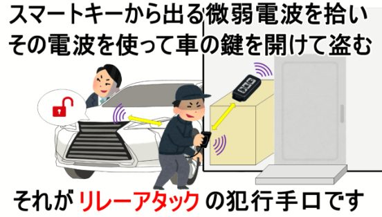
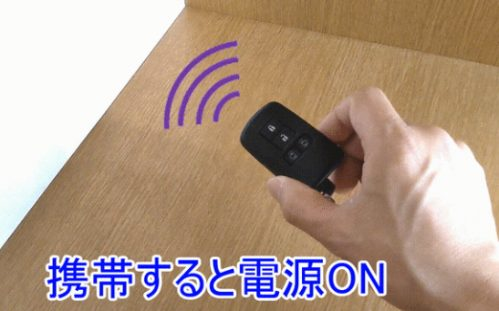
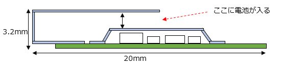
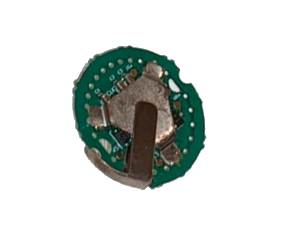
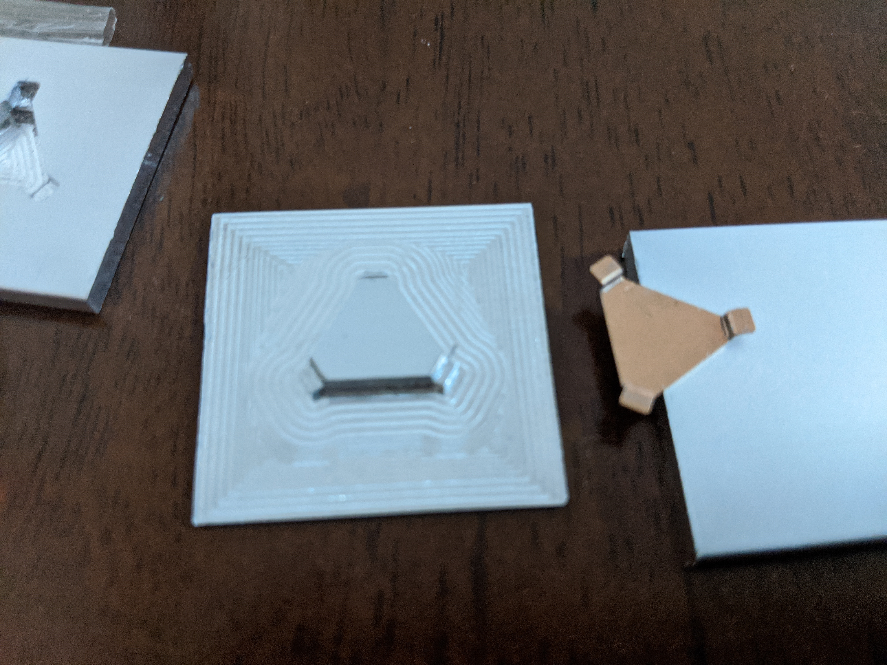
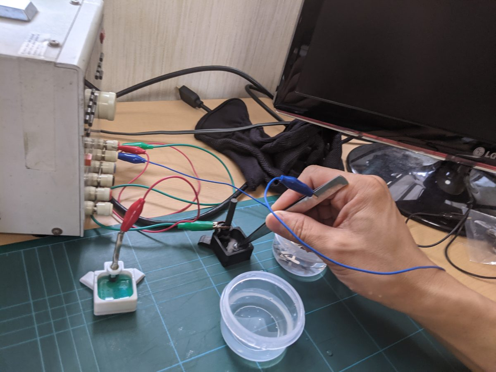
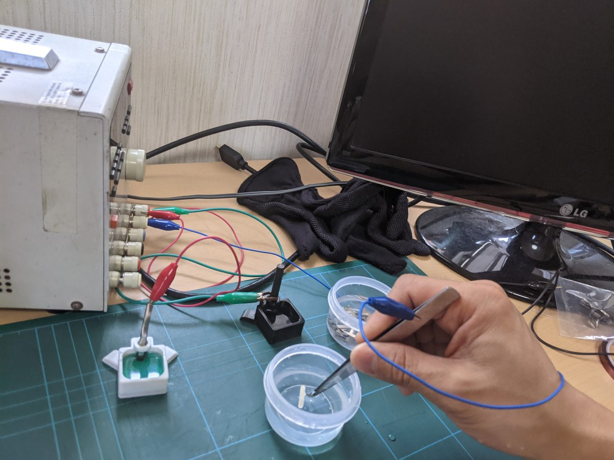
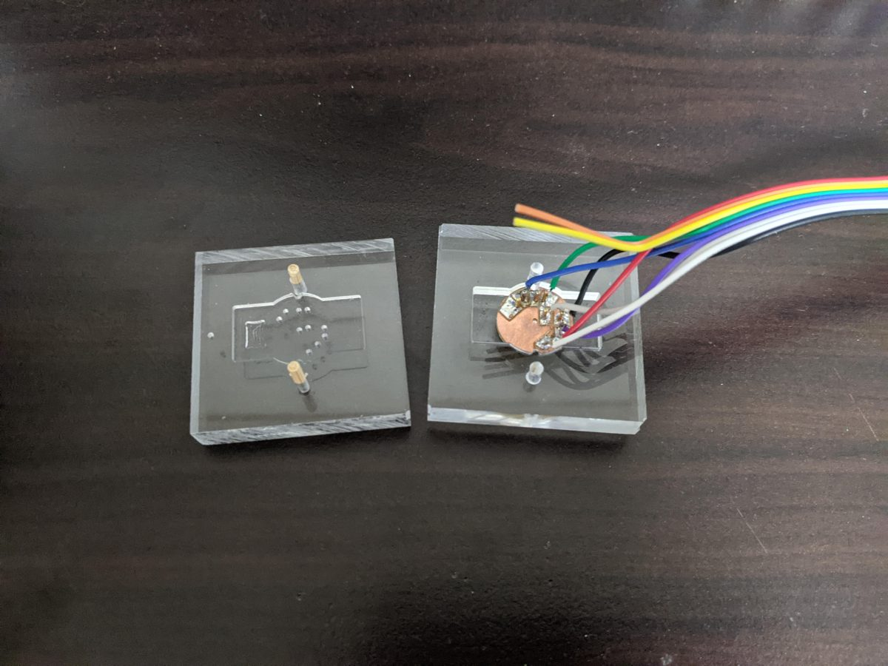

Motion Cell
スマートキーにセットするだけで、リレーアタックから車を守る防犯装置です。2020年、Makuakeでクラウドファンディングを成功させました。私にとって一番の功績です（現在は販売を終了しています）。
仕組み
リレーアタックは、スマートキーから出る微弱な電波を拾って車の鍵を開けてしまう手口です。ならば、使っていないときはキーの電源そのものを切ってしまえばいい。そう考えて、コイン型電池CR2032とまったく同じ大きさ（厚さ3.2mm）の装置を作りました。

スマートキーの電池と入れ替えてセットすると、振動検知が追加されます。キーを持ち歩いている間は電源ONでいつも通り使えて、置いてから30秒たつと自動で電源が切れて電波が出なくなります。電波遮断ポーチに出し入れする面倒がありません。



| サイズ | CR2032と同サイズ（厚さ3.2mm） |
|---|---|
| 動作 | 振動を検知して電源ON / 静止30秒で電源OFF |
| 対応 | CR2032使用のスマートキー |
| 実績 | 2020年11月 クラウドファンディング（Makuake）開始、特許取得、2022年 発明協会 発明コンテスト佳作 |
Motion Cellは過去の作品です。特許の権利期間が終了したこともあり、現在は販売していません。お使いいただいた方のために、取扱説明書は公開を続けています。
製作工程
量産といっても個人の規模なので、工程のほとんどを自宅で内製しました。
電極の切り出し
電池の接点になる電極は、CNCで銅板から切り出しました。
折り曲げ金型
切り出した電極を折り曲げる金型も、アルミを削り出して自作しました。

メッキ処理
電極にはニッケルメッキのあと金メッキを施しました。卓上の小さな浴槽で、1個ずつ手作業です。


基板とプログラム
基板のはんだ付けは自作のリフロー炉で、プログラムの書き込みはポゴピンを使った自作治具で行いました。
